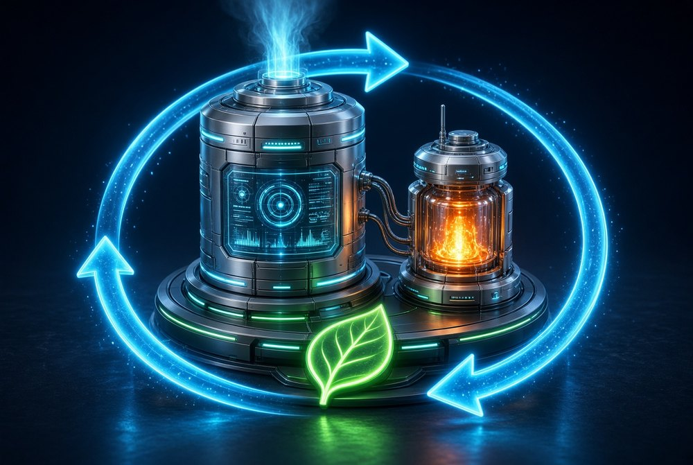

Energy & Environment

Compact, low-emission technologies for producing and using energy, and for recovering valuable materials from waste.
GTL-Power mini-plant
A large number of oil and gas fields are “stranded”: they are not close enough to a pipeline to be developed economically. As a result, the economic value of associated petroleum gas (APG) and natural gas remains trapped in the earth's crust or is released into the atmosphere. Even where gas is available at a remote location, for example in a pipeline, it has greater utility if it is converted on site into liquid motor fuel and clean power.
The GTL-Power mini-plant is designed to convert APG and natural gas at the place of extraction or consumption into derivatives for storage and transport, or into motor fuel and clean power for on-site use, without CO2 emission. A gas-turbine electric generator supplies the synthesis process and produces additional power and heat. A mobile version is planned, for transportation by land, air and sea.
Low-tonnage plants open the way to developing medium and small oil and gas fields. Small-scale production of derivatives and clean power where the gas is extracted and consumed will help to solve the environmental problems associated with gas combustion.
Autonomous flameless thermochemical heating boiler with gravity feed of encapsulated composite metal fuel briquettes, passive bimetallic ash removal and in-situ catalytic hydrogen recombination
The invention relates to autonomous heating systems for residential and small commercial buildings, specifically to flameless thermochemical boilers utilizing controlled exothermic reactions between a solid composite metal-based fuel, water vapour and atmospheric oxygen. The boiler is classified under IPC classes F24H 1/00, F24V 30/00, C01B 3/08, F23C 13/00 and C10L 5/40. It represents a combined system for heat generation and a specialised solid composite fuel manufactured from processed industrial waste. Once initiated, the boiler operates passively in a self-sustained mode and requires only minimal electricity during a brief start-up phase.
Efficient Technology for Precious, Rare and Refractory Metals Extraction from Secondary Raw Materials
Precious and rare metals are important materials for engineering, electronics and science, and the quantity of secondary raw materials containing them is now comparable with natural sources. Existing technologies are designed for large volumes of homogeneous primary raw material with a low metal content: the equipment is expensive and unsuitable for small batches, processing on large industrial plants causes big losses because the specific features of secondary materials are not taken into account, and the cost of standard industrial processing often exceeds the value of the extracted metals.
The proposed technology is a low-cost automated refining system for extracting gold, platinum-group metals, silver, tungsten, molybdenum and rhenium from secondary raw materials that usually contain up to 5% (wt/wt) of metals. Such materials come from the utilization, recycling, repair and modernization of electronic and communication equipment and computers: scrap from rolling, cladding and punching, two- and multi-layer parts covered by a thin layer of precious metals, and electronic scrap in which metals are combined with plastics, ceramics and glass.
The method is based on chemical leaching that transfers all metal compounds into the liquid phase, followed by sequential selective extraction with minimal losses regardless of the composition and structure of the raw material. A closed-cycle technological scheme is directed at eliminating the emission of hazardous substances into the environment and allows the construction of low-cost production units for economically sound extraction of precious, rare and refractory metals.